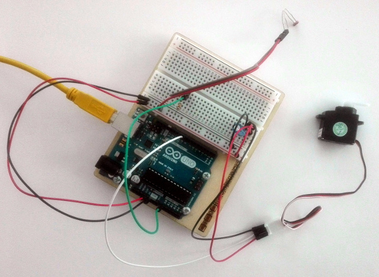

risorse | arduino gioca a dino
Attenzione: ho posto la massima cura ed attenzione nel redigere questi appunti; declino tuttavia ogni responsabilità per eventuali imprecisioni, errori od omissioni, così come declino ogni responsabilità per eventuali danni a cose, proprietà o persone derivanti dall’uso di questi contenuti.
Recentemente sono apparse in rete diverse realizzazioni di questo simpatico progetto: programmare Arduino affinché giochi da sè a «Dino», il videogioco che Chrome propone quando non c'è rete. Tra i tanti esempi disponibili, ne cito tre: How to Beat Google's Chrome Dinosaur Game with Arduino in Tom's Hardware, I made an automated dinosaur game bot in Reddit, Tricking T-Rex – Arduino-Based Chrome Dino Game pubblicato su DIYODE.
Considerato che i componenti necessari alla realizzazione sono disponibili nello Starter Pack di Arduino, complice il lock-down di questi giorni che mi regala un po' di tempo libero, ho deciso di cimentarmi anch'io nell'impresa.
Dino è un gioco integrato nel browser Chrome che appare quando l'accesso a Internet non è disponibile. Lo si può richiamare a piacere, sempre da Chrome, accedendo all'indirizzo chrome://dino/. La meccanica di gioco è elementare: bisogna evitare che il T-Rex urti gli ostacoli che gli si parano davanti durante la sua corsa (cactus nella prima fase di gioco, cui successivamente si aggiungono pterosauri) premendo al momento opportuno la barra spaziatrice o il tasto freccia-su per far spiccare un bel salto al dinosauro. Nella seconda fase di gioco, per evitare i pterosauri che volano a mezza altezza, bisogna ricorrere al tasto freccia-giù, che fa accovacciare il protagonista:
Una fase del gioco «Dino»
Due sono i componenti principali del circuito: un fotoresistore che, applicato allo schermo, ha lo scopo di indicare l'avvicinarsi di un ostacolo (il fotoresistore registrerà una diminuzione di luminosità al passaggio dell'ostacolo, essendo questo molto più scuro dello sfondo); un servomotore che, opportunamente posizionato, agisce sulla barra spaziatrice e fa saltare il dinosauro. A completare il circuito una resistenza da 10KΩ per il partitore del fotoresistore e un condensatore da 100µF per agevolare il servomotore nello spunto:
Lo schema elettrico
Il cablaggio del circuito
Realizzazione pratica del circuito
Il servomotore |
Il fotoresistore |
Realizzare il circuito è stato semplice. Più complicato è stato individuare il punto ottimale in cui fissare il fotoresistore sullo schermo; troppo a sinistra e il salto avviene in ritardo, troppo a destra e il salto avviene troppo in anticipo – quest'ultimo problema in linea di principio è risolvibile ritardando l'azione del servomotore:
Il fotoresistore applicato allo schermo con dello scotch
A causa della resistenza offerta dalla barra spaziatrice non ho trovato altro modo di condurre gli esperimenti che tenere in posizione il servomotore con le mani: per quanto scotch usassi, dopo poche attivazioni esso tendeva a perdere la sua posizione e la sua azione diventava inefficace. Forse del nastro adesivo più robusto (isolante, telato?) avrebbe giovato.
Infine, è stato particolarmente tedioso stabilire la soglia di luminosità per l'attivazione del servomotore: le condizioni ambientali sono determinanti, sarebbe perlomento opportuno proteggere il fotoresistore dalla luce ambientale, meglio ancora operare in un luogo ove questa sia controllabile. Ad ogni modo, ritengo il risultato finale soddisfacente, avendo Arduino ha superato con successo la prima fase del gioco, accumulando ben 609 punti prima di scontrarsi con uno pterosauro:
Il primo pterosauro è stato fatale!
Il programma è banale. Il livello di luminosità registrato dal fotoresistore viene controllato ciclicamente; quando questo scende sotto la soglia prefissata si aziona il servomotore:
#include <Servo.h>
Servo my_servo;
const int SERVO_PIN = 9;
const int ARM_UP = 90;
const int ARM_DOWN = 0;
const int PRESS_DURATION = 500;
const int SENSOR_PIN = A0;
const int SENSOR_THRESHOLD = 600;
void setup() {
my_servo.attach(SERVO_PIN);
my_servo.write(ARM_UP);
Serial.begin(9600);
}
void loop() {
int light_level = analogRead(SENSOR_PIN);
Serial.print("light_level:");
Serial.println(light_level);
if (light_level<SENSOR_THRESHOLD) {
my_servo.write(ARM_DOWN);
delay(PRESS_DURATION);
my_servo.write(ARM_UP);
}
}
Per finire, un breve video che mostra il circuito in azione:
Pagina modificata il 12/04/2020